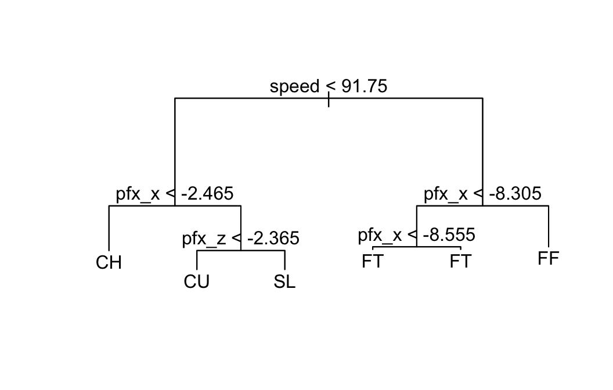

When you have made a predictive model it’s important to estimate how well it would perform on new observations—that is, on observations that are different from the ones that were used to build the model in the first place. This cannot be done if you use all of the available data to build your model. Hence it is usually recommended to divide your data into two sets:
The training set will be used to build the model. The model is then tested on the test set. How well it performs on the test set is likely to be a more reliable indicator of its performance “in the field” on new observations than how it performs on the very training set that it was built upon.
In order to remove any possibility of researcher-bias, this division should be performed randomly by the computer.
We’ll use the verlander data frame from the tigerstats package:
library(tigerstats)
help(verlander)
str(verlander)## 'data.frame': 15307 obs. of 12 variables:
## $ season : int 2009 2009 2009 2009 2009 2009 2009 2009 2009 2009 ...
## $ gamedate : Date, format: "2009-04-06" "2009-04-06" ...
## $ pitch_type : Factor w/ 5 levels "CH","CU","FF",..: 3 2 2 2 3 2 3 3 3 1 ...
## $ balls : int 0 0 1 1 1 1 2 3 0 0 ...
## $ strikes : int 0 1 1 2 2 2 2 2 0 1 ...
## $ pitches : int 0 1 2 3 4 5 6 7 8 9 ...
## $ speed : num 96.6 81.1 80.4 83.1 97.9 82.6 98.7 97.1 97.8 85.8 ...
## $ px : num -0.43 -0.43 -0.17 -0.76 -0.31 0.32 0.72 0.51 -0.45 -0.89 ...
## $ pz : num 3.24 3.79 2.98 3.45 2.5 1.3 3.3 2.37 2.29 2.1 ...
## $ pfx_x : num -4.44 5.53 4.83 4.21 -6.64 5.21 -7.65 -5.1 -8.07 -6.67 ...
## $ pfx_z : num 9.28 -8.28 -8.03 -9.33 6.3 -8.44 4.77 6.29 7.38 4.47 ...
## $ batter_hand: Factor w/ 2 levels "L","R": 2 2 2 2 2 2 2 2 2 2 ...Our goal is to build a model to predict how the pitchFX machine would classify a Justin Verlander pitch. In other words, we would like to predict pitch_type from the other factor and numerical variables in the data frame.
Trees can’t work with dates, and the the season won’t be relevant if we want to use the tree to predict pitches for future seasons, so we create a frame without those variables:
ver2 <- verlander
ver2$season <- NULL
ver2$gamedate <- NULLLet’s say that we plan to build just one tree model. Then it’s appropriate to divide the data into a training and a test set. We can do with is the divideTrainTest() function:
myTrainTest <- divideTrainTest(seed = 4040, prop.train = 0.7, data = ver2)The seed argument can be any integer; setting the seed guarantees the reproducibility of your work while making the division “look random.” Setting prop.train to 0.7 ensures an approximately 70%-30% split between training and test sets.
The result is list of two desired data frames. For convenience, let’s give them short names:
verTrain <- myTrainTest$train #the training set
verTest <- myTrainTest$test #the test setNow you are ready to build your model, using the training set.
verMod <- tree(pitch_type ~ ., data = verTrain)
plot(verMod); text(verMod)
Let’s see how well the tree worked on the data used to build it:
summary(verMod)##
## Classification tree:
## tree(formula = pitch_type ~ ., data = verTrain)
## Variables actually used in tree construction:
## [1] "speed" "pfx_x" "pfx_z"
## Number of terminal nodes: 6
## Residual mean deviance: 0.2612 = 2796 / 10710
## Misclassification error rate: 0.03248 = 348 / 10714The misclassification rate was 3.248%.
The tryTree() function can be used to see how well the tree performs on the test set:
tryTree(mod = verMod, testSet = verTest,
truth = verTest$pitch_type)## Residual mean deviance: 0.2684 = 1231 / 4587
## Misclassification error rate: 0.03396 = 156 / 4593
## Confusion matrix:
## truth
## prediction CH CU FF FT SL
## CH 760 0 2 19 11
## CU 0 780 0 0 28
## FF 3 0 1996 16 3
## FT 0 0 46 570 0
## SL 5 23 0 0 331As one might expect, the misclassification rate is a bit higher on the new data: about 3.4%.
Note: It is possible to “try” the tree on the training set:
tryTree(mod = verMod, testSet = verTrain,
truth = verTrain$pitch_type)## Residual mean deviance: 0.2612 = 2796.4 / 10708
## Misclassification error rate: 0.03248 = 348 / 10714
## Confusion matrix:
## truth
## prediction CH CU FF FT SL
## CH 1767 0 1 37 40
## CU 0 1875 0 0 73
## FF 13 0 4607 36 4
## FT 0 0 104 1343 0
## SL 2 38 0 0 774More often than not, you would like to build several tree models and compare them, choosing the one that works best. If do the comparisons on the test set, then you are using the test set as part of the training set, so it won’t be “new data” any more. Hence when you plan to build and compare multiple models, the training set should be further subdivided into a set used to build all of the models and another set, called the quiz set, that provides “new data” on which the candidate models will be compared.
This results in a three-fold division of the available data:
This division can be accomplished by adding a new argument, prop.quiz, to the divideTrainTest() function:
my3Frames <- divideTrainTest(seed = 4040, prop.train = 0.6,
prop.quiz = 0.2, data = ver2)The resulting division is 60% training, 20% quiz and 20% test.
Now you can build as many models as you like:
verTrain <- my3Frames$train
verQuiz <- my3Frames$quiz
verTest <- my3Frames$test
verMod1 <- tree(pitch_type ~ ., data = verTrain,
control = tree.control(
nobs = nrow(verTrain),
mincut = 100,
minsize = 200,
mindev = 0.1
))
summary(verMod1)##
## Classification tree:
## tree(formula = pitch_type ~ ., data = verTrain, control = tree.control(nobs = nrow(verTrain),
## mincut = 100, minsize = 200, mindev = 0.1))
## Variables actually used in tree construction:
## [1] "speed" "pfx_x"
## Number of terminal nodes: 4
## Residual mean deviance: 0.5243 = 4813 / 9180
## Misclassification error rate: 0.1016 = 933 / 9184tryTree(mod = verMod1, testSet = verQuiz, truth = verQuiz$pitch_type)## Residual mean deviance: 0.5241 = 1602.1 / 3057
## Misclassification error rate: 0.10095 = 309 / 3061
## Confusion matrix:
## truth
## prediction CH CU FF FT SL
## CH 493 0 0 14 13
## CU 2 542 0 0 238
## FF 3 0 1304 8 0
## FT 0 0 31 413 0
## SL 0 0 0 0 0The first tree we made has only four nodes, and misclassification rate on the quiz data is very high: about 10.1%.
Let’s make another, very large tree:
verMod2 <- tree(pitch_type ~ ., data = verTrain,
control = tree.control(
nobs = nrow(verTrain),
mincut = 1,
minsize = 2,
mindev = 0
))
summary(verMod2)##
## Classification tree:
## tree(formula = pitch_type ~ ., data = verTrain, control = tree.control(nobs = nrow(verTrain),
## mincut = 1, minsize = 2, mindev = 0))
## Number of terminal nodes: 165
## Residual mean deviance: 0 = 0 / 9019
## Misclassification error rate: 0 = 0 / 9184tryTree(mod = verMod2, testSet = verQuiz, truth = verQuiz$pitch_type)## Residual mean deviance: 0.0842 = 248.6 / 2952
## Misclassification error rate: 0.02581 = 79 / 3061
## Confusion matrix:
## truth
## prediction CH CU FF FT SL
## CH 484 0 2 1 12
## CU 0 532 0 0 4
## FF 4 0 1318 21 0
## FT 3 0 15 413 0
## SL 7 10 0 0 235Model 2 has very many nodes, and although the misclassification rate on its own data is 0%, the rate on the quiz set is about 2.58%. That’s the rate we care about!
Let’s try a model that is “intermediate” in size:
verMod3 <- tree(pitch_type ~ ., data = verTrain,
control = tree.control(
nobs = nrow(verTrain),
mincut = 5,
minsize = 10,
mindev = 0.0003
))
summary(verMod3)##
## Classification tree:
## tree(formula = pitch_type ~ ., data = verTrain, control = tree.control(nobs = nrow(verTrain),
## mincut = 5, minsize = 10, mindev = 3e-04))
## Variables actually used in tree construction:
## [1] "speed" "pfx_x" "strikes" "pz" "pfx_z" "px" "pitches"
## Number of terminal nodes: 48
## Residual mean deviance: 0.07698 = 703.3 / 9136
## Misclassification error rate: 0.0159 = 146 / 9184tryTree(mod = verMod3, testSet = verQuiz, truth = verQuiz$pitch_type)## Residual mean deviance: 0.1188 = 358.2 / 3016
## Misclassification error rate: 0.02221 = 68 / 3061
## Confusion matrix:
## truth
## prediction CH CU FF FT SL
## CH 490 0 0 2 11
## CU 0 533 0 0 3
## FF 3 0 1315 15 0
## FT 2 0 18 418 0
## SL 3 9 2 0 237This tree has a lower misclassification rate: about 2.22%.
And finally, a tree that is rather on the small side:
verMod4 <- tree(pitch_type ~ ., data = verTrain,
control = tree.control(
nobs = nrow(verTrain),
mincut = 5,
minsize = 10,
mindev = 0.01
))
summary(verMod4)##
## Classification tree:
## tree(formula = pitch_type ~ ., data = verTrain, control = tree.control(nobs = nrow(verTrain),
## mincut = 5, minsize = 10, mindev = 0.01))
## Variables actually used in tree construction:
## [1] "speed" "pfx_x" "pfx_z"
## Number of terminal nodes: 6
## Residual mean deviance: 0.2632 = 2416 / 9178
## Misclassification error rate: 0.0331 = 304 / 9184tryTree(mod = verMod4, testSet = verQuiz, truth = verQuiz$pitch_type)## Residual mean deviance: 0.2602 = 795.1 / 3055
## Misclassification error rate: 0.033 = 101 / 3061
## Confusion matrix:
## truth
## prediction CH CU FF FT SL
## CH 493 0 0 14 13
## CU 0 527 0 0 15
## FF 3 0 1304 8 0
## FT 0 0 31 413 0
## SL 2 15 0 0 223This last tree has a reasonably low misclassification rate of about 3.3%, but that’s not the lowest rate we have seen. With only six nodes, though, Model 4 is small enough to plot and will be easier for non-technical people to understand.
Which tree should we go with? That’s a judgment call that depends on the practical context of the problem.
Let’s say that we decide to go with Model 4. Our last act is to test this model on the test set:
tryTree(mod = verMod4, testSet = verTest, truth = verTest$pitch_type)## Residual mean deviance: 0.2747 = 839.5 / 3056
## Misclassification error rate: 0.03396 = 104 / 3062
## Confusion matrix:
## truth
## prediction CH CU FF FT SL
## CH 503 0 2 11 12
## CU 0 526 0 0 18
## FF 3 0 1348 11 3
## FT 0 0 28 367 0
## SL 1 15 0 0 214Based on the result, we figure that our chosen model will have about a 3.4% error rate on new but similar observations of Justin Verlander pitches.
Note: remember to stick with the model you chose! Don’t go back and try another candidate model on your test set!
tryTree() computes deviance and residual mean deviance using the same approach that summary() uses when applied to a tree model. Thus for a classification tree deviance is first computed at each terminal node as:
\[-2 \sum_{k = 1}^K n_k \ln p_k,\]
where
The deviance proper is the the sum of the deviances at all of the terminal nodes.
For regression trees the deviance is first computed at each node as:
\[\sum_{i=1}^N (y_i - \bar{y})^2,\]
where
The deviance proper is again the sum of the deviances at all of the terminal nodes.
For either type of tree, the mean residual deviance is:
\[\frac{\mathrm{deviance}}{n - m},\]
where \(n\) is the number of observations at terminal nodes and \(m\) is the number of terminal nodes.
Note that deviance calculations only depend on observations at terminal nodes. Observations that fail to reach a terminal node due to missing values are not taken into account. Similarly, for classification trees the misclassification rate is computed using only the observations at terminal nodes.